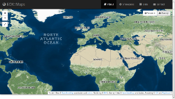

ngEO Browse Server
ngEO Task 4 CDR V2 - Toulouse - 2014-06-04
Stephan Meißl stephan.meissl@eox.at @Schpidi
 This work is licensed under a Creative Commons Attribution 4.0 International License.
This work is licensed under a Creative Commons Attribution 4.0 International License.
Interfaces with the FEED
- Upload images: WebDAV at
http://URL/store/ - Ingestion: Browse Reports via HTTP POST
http://URL/browse/ingest
Preprocessing
- Input Geographic Metadata for Geo-referencing
- Footprint polygon - footprint
- Regular grid of tiepoints - regularGrid
- Pre-georeferenced images
- rectifiedBrowse
- modelInGeotiff
- Optimizations
- Footprint generation
- Re-projection
- Addition of alpha-channel
- Internal tilling
- Overviews
- Compression
Interfaces with the WEBC
& Generic Clients
Interfaces with the WEBS
- Authorization invoked by BROW
- Authentication done on proxy
- Patch to MapCache
- Simple Python script to query WEBS
- Only RESTRICTED and PRIVATE layers
- Username from HTTP header e.g. SP-Person-Identifier
- Authorization based on browse layer & username
- Memcached to cache decisions
Interfaces with the CTRL
- Register/Unregister: JSON via HTTP POST/DELETE
http://URL/browse/controllerServer - Status: Retrieve via HTTP GET and set via HTTP PUT
http://URL/browse/status - Configuration & Schema: Retrieve via HTTP GET and set via HTTP PUT
http://URL/browse/instanceconfig - Configuration revision: Retrieve via HTTP GET
http://URL/browse/revision - Browse Layer configuration: Layer definition XML via HTTP PUT or POST
http://URL/browse/config - Log:
http://URL/browse/log JSON list of available log files
http://URL/browse/log/(\d{4}-\d{2}-\d{2})/(.*) Log file contenct
e.g. http://URL/browse/log/2014-05-20/ngeo.log - Notifications: Sent for everything logged with level ERROR or higher
- Reporting: Files are generated and stored by a daily cronjob
Command Line Interfaces
Ingest, Export, Import, and Delete
$ python manage.py ngeo_ingest <browse-report-xml>
$ python manage.py ngeo_export --layer=<layer-id> | --browse-type=<browse-type> [--start=<start-date-time>] [--end=<end-date-time>]
$ python manage.py ngeo_import <package-path>
$ python manage.py ngeo_delete --layer=<layer-id> | --browse-type=<browse-type> [--start=<start-date-time>[--end=<end-date-time>]
Technology Baseline
- CentOS 6 64bit repositories (base, extras, updates) based on RHEL 6
- Apache HTTP server 2.2: httpd, mod_wsgi
- PostgreSQL 8.4: postgresql-server, postgresql
- Python 2.6: python, python-lxml, python-psycopg2, pytz
- EPEL & ELGIS repositories
- Django 1.4: Django14
- PROJ.4 4.8: proj
- GDAL 1.9: gdal, gdal-python
- PostGIS 1.5: postgis
- EOX repository
- libxml2 2.7: libxml2, libxml2-python - GML patch
- MapServer 6.2: mapserver, mapserver-python
- MapCache 1.2: mapcache - authz patch
- Memcached 1.4: memcached
- EOxServer 0.3: EOxServer
- ngeo.b.core 2.0: ngEO_Browse_Server - 1.0 deprecated
Development & Testing
- Git hosted on GitHub
- Vagrant & VirtualBox (see HOWTO)
- Jenkins CI
- Python/Django unit test framework
- Performance tests using JMeter
- Integration testing on OpenStack platform provided by Task 5
Status
- Finished with implementation
- Deliverables
- DDS 1.4 20 May 2014
- IOM 1.5 23 May 2015
- SSTP 1.4 23 May 2015
- SSTR TBD
- Open Jira issues
- Warranty
Further EOX Contributions
- Background & Overlay Maps Service Operation
 - Provision of integration and validation platform for Task 4
- Multi-Mission Hosting & Validation (Task 5)
- 3D Browse Extension (V-Manip project)

ngEO Browse Server
ngEO Task 4 CDR V2 - Toulouse - 2014-06-04
Stephan Meißl stephan.meissl@eox.at @Schpidi
View presentation at http://schpidi.github.io/ngeo_brow_cdr_v2
This work is licensed under a Creative Commons Attribution 4.0 International License.